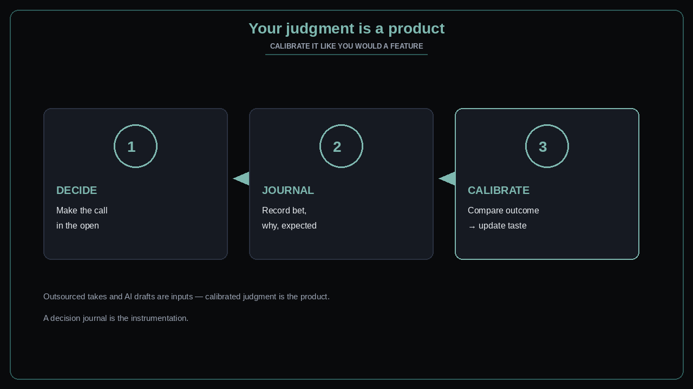

Your judgment is a product — calibrate it
Source: George / prodmgmt.world (@nurijanian)
original post
What it claims
Your judgment is a product. Calibrate it. In a world of abundant answers and AI drafts, the scarce asset is taste you have stress-tested against outcomes — not cleverness in the moment. A decision journal (bet, why, expected signal, later result) is how you instrument that product.
Why it matters for a PO
POs are paid for calls under ambiguity. If every decision evaporates after the meeting, you never improve the instrument. Stakeholders will keep asking you to “be more data-driven” while you keep repeating the same miss. Treat judgment like a feature: ship decisions, measure, revise.
3 takeaways
- Judgment is buildable: decide → journal → compare outcome → update priors.
- AI and frameworks are inputs; calibrated judgment is the product you own.
- Without a written bet and expected signal, you cannot learn from being wrong.
Practice this week
Start a one-page decision journal. Log three live calls: decision, why, what you expect to see in 1–2 weeks. At the end of the week, mark hit/miss and one prior you will change. Bring one calibrated miss to your next trio retro — not as blame, as instrument update.